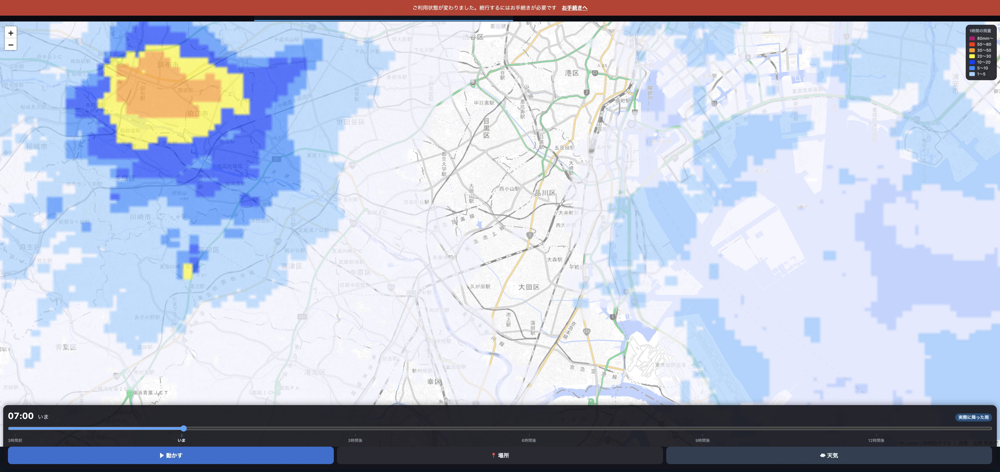

3つとも直して、
本番に出しました
申し訳ありませんでした。
1
更新ボタンが効かない
押しても、古い中身のまま動き続けていました。
前
新しい中身は届いているのに
古い係がそのまま応対し続ける
→ 次に開くとまた「更新があります」
→
いま
「交代して」と伝えて
交代を見届けてから開き直す
→ 一度で新しくなる
実機で「帯が出る→押す→帯が消えて戻ってこない」まで確認しました
帯に「×」も付けました。
あとで更新したいときは閉じられます。
2
タブが消える
原因は2つありました。
原因① 帯が覆っていた
🔄 新しいバージョンがあります
🔄 新しいバージョンがあります
↑ この下にタブが隠れていた
→ 帯のぶん、下にずらした
タブが見えるようになった
原因② 画面を広げると外へ
タブ
指で画面を広げると
タブが画面の外へ出たまま戻らない
→ ページ自体が動かない作りに変えた
どう操作してもタブは一番上に居続ける
地図の拡大はこれまで通りできます（動くのは地図だけ）
3
時間バーに目盛りが無い
「3時間前より14時間後のほうが幅が狭い」のもご指摘のとおりでした。
前
過去3時間（37コマ）
先の13時間（13コマ）
コマの数で等間隔＝短い過去のほうが幅広い
いま
3時間前
いま
3時間後
6時間後
9時間後
12時間後
時間の長さどおりの幅＋3時間おきの目盛り
つまみを動かすと、いちばん近いコマに吸い付きます

実際の画面。バーの下に「3時間前 / いま / 3時間後 / 6時間後 / 9時間後 / 12時間後」
まとめ
3つとも
本番に出しました
。
更新は一度押せば新しくなります（帯は「×」で閉じられます）。
タブはどう操作しても一番上に残ります。
時間バーは時間の長さどおりの幅になり、3時間おきの目盛りが付きました。
テスト1209件すべて通っています。